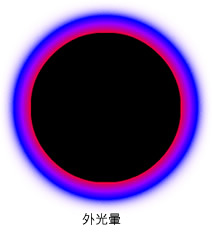

| 套件 | flash.filters |
| 類別 | public final class GradientGlowFilter |
| 繼承 | GradientGlowFilter |
| 語言版本: | ActionScript 3.0 |
| 執行階段版本: | AIR 1.0, Flash Player 9 |
濾鏡的使用取決於濾鏡套用到的物件：
- 若要將濾鏡套用至顯示物件，請使用
filters屬性。 設定物件的filters屬性不會修改該物件，而且只要清除filters屬性就可以移除濾鏡。 - 若要將濾鏡套用至 BitmapData 物件，請使用
BitmapData.applyFilter()方法。 對 BitmapData 物件呼叫applyFilter()時會採用原始 BitmapData 物件和濾鏡物件，結果會產生套用濾鏡後的影像。
如果您將濾鏡套用至顯示物件，該顯示物件的 cacheAsBitmap 屬性就會設定為 true。 如果您清除所有濾鏡，則會還原 cacheAsBitmap 的原始值。
這個濾鏡支援舞台縮放。但不支援一般的縮放、旋轉或傾斜操作。如果是縮放物件本身 (如果 scaleX 和 scaleY 設定為 1.0 以外的值)，則不會縮放濾鏡特效。 濾鏡只在使用者在「舞台」上放大顯示時才會進行縮放。
如果產生的影像超過最大尺寸，系統就不會套用濾鏡。在 AIR 1.5 和 Flash Player 10 中，最大寬度或高度為 8,191 像素，而且像素總計不得超過 16,777,215 像素。(因此，如果影像寬度為 8,191 像素，則其高度上限為 2,048 像素)。若為 Flash Player 9 和 AIR 1.1 及其更早版本，高度和寬度的上限都是 2,880 像素。例如，當您在套用某個濾鏡的大型影片片段上進行放大顯示時，如果產生的影像超過最大尺寸，便會關閉該濾鏡。
相關 API 元素
flash.display.BitmapData.applyFilter()
flash.display.DisplayObject.cacheAsBitmap
flash.display.DisplayObject.filters
GlowFilter 類別
 隱藏繼承公用屬性
隱藏繼承公用屬性 顯示繼承公用屬性
顯示繼承公用屬性| 屬性 | 定義自 | ||
|---|---|---|---|
| alphas : Array
在 colors 陣列中，其對應顏色之 Alpha 透明度值的陣列。 | GradientGlowFilter | ||
| angle : Number
角度，以度數為單位。 | GradientGlowFilter | ||
| blurX : Number
水平模糊化量。 | GradientGlowFilter | ||
| blurY : Number
垂直模糊化量。 | GradientGlowFilter | ||
| colors : Array
用來定義漸層的顏色陣列。 | GradientGlowFilter | ||
 | constructor : Object
類別物件的參照或是特定物件實體的建構函數。 | Object | |
| distance : Number
光暈的偏移距離。 | GradientGlowFilter | ||
| knockout : Boolean
指定物件是否具有去底色特效。 | GradientGlowFilter | ||
| quality : int
套用濾鏡的次數。 | GradientGlowFilter | ||
| ratios : Array
在 colors 陣列中，其對應顏色的顏色分佈比例陣列。 | GradientGlowFilter | ||
| strength : Number
壓印強度或範圍。 | GradientGlowFilter | ||
| type : String
濾鏡特效的位置。 | GradientGlowFilter | ||
| 方法 | 定義自 | ||
|---|---|---|---|
GradientGlowFilter(distance:Number = 4.0, angle:Number = 45, colors:Array = null, alphas:Array = null, ratios:Array = null, blurX:Number = 4.0, blurY:Number = 4.0, strength:Number = 1, quality:int = 1, type:String = "inner", knockout:Boolean = false)
以指定的參數初始化濾鏡。 | GradientGlowFilter | ||
[覆寫]
傳回此濾鏡物件的副本。 | GradientGlowFilter | ||
|
指出物件是否有已定義的指定屬性。 | Object | |
|
指出 Object 類別的實體是否位於指定為參數的物件原型鏈中。 | Object | |
|
指出指定的屬性是否存在，以及是否可列舉。 | Object | |
|
為迴圈作業設定動態屬性的可用性。 | Object | |
|
傳回代表此物件的字串，根據地區特定慣例進行格式化。 | Object | |
|
會傳回指定之物件的字串形式。 | Object | |
|
會傳回指定之物件的基本值。 | Object | |
alphas | 屬性 |
alphas:Array| 語言版本: | ActionScript 3.0 |
| 執行階段版本: | AIR 1.0, Flash Player 9 |
在 colors 陣列中，其對應顏色之 Alpha 透明度值的陣列。 陣列中每一個元素的有效值為 0 到 1。 例如，.25 則會將 Alpha 透明度值設定為 25%。
alphas 屬性無法藉由直接修改其值來變更。 相反地，您必須先取得 alphas 的參照，再對參照進行變更，然後將 alphas 設為該參照。
colors、alphas 和 ratios 屬性都彼此相關。 colors 陣列的第一個元素會對應到 alphas 陣列和 ratios 陣列的第一個元素，以下則依此類推。
實作
public function get alphas():Array public function set alphas(value:Array):void擲回值
TypeError — 設定時，Array 為 null
|
相關 API 元素
angle | 屬性 |
blurX | 屬性 |
blurY | 屬性 |
colors | 屬性 |
colors:Array| 語言版本: | ActionScript 3.0 |
| 執行階段版本: | AIR 1.0, Flash Player 9 |
用來定義漸層的顏色陣列。 例如，紅色是 0xFF0000、藍色是 0x0000FF，依此類推。
colors 屬性無法藉由直接修改其值來變更。 相反地，您必須先取得 colors 的參照，再對參照進行變更，然後將 colors 設為該參照。
colors、alphas 和 ratios 屬性都彼此相關。 colors 陣列的第一個元素會對應到 alphas 陣列和 ratios 陣列的第一個元素，以下則依此類推。
實作
public function get colors():Array public function set colors(value:Array):void擲回值
TypeError — 設定時，Array 為 null
|
相關 API 元素
distance | 屬性 |
knockout | 屬性 |
quality | 屬性 |
quality:int| 語言版本: | ActionScript 3.0 |
| 執行階段版本: | AIR 1.0, Flash Player 9 |
套用濾鏡的次數。 預設值為 BitmapFilterQuality.LOW (相當於套用一次濾鏡)。 BitmapFilterQuality.MEDIUM 值會套用兩次濾鏡，而 BitmapFilterQuality.HIGH 值會套用三次濾鏡。 設定值較低的濾鏡，其顯示速度較快。
對大部份應用程式而言，將 quality 值設為低、中或高就足夠了。 雖然您可以使用其他數值 (最高可至 15) 來達成不同的效果，但越高的值就代表越緩慢的顯示速度。 只要增加 blurX 和 blurY 屬性的值，通常就可以得到類似的效果和較快的顯示速度，而不需要增加 quality 的值。
實作
public function get quality():int public function set quality(value:int):void相關 API 元素
ratios | 屬性 |
ratios:Array| 語言版本: | ActionScript 3.0 |
| 執行階段版本: | AIR 1.0, Flash Player 9 |
在 colors 陣列中，其對應顏色的顏色分佈比例陣列。 有效值為 0 到 255。
ratios 屬性無法藉由直接修改其值來變更。 相反地，您必須先取得 ratios 的參照，再對參照進行變更，然後將 ratios 設為該參照。
colors、alphas 和 ratios 屬性都彼此相關。 colors 陣列的第一個元素會對應到 alphas 陣列和 ratios 陣列的第一個元素，以下則依此類推。
請將漸層光暈濾鏡想成是以各種顏色條紋相互摻合而成的漸層，從物件中心 (若 distance 值設為 0) 放射出來的光暈。 colors 陣列中的第一個顏色是光暈最外面的顏色。 最後一個顏色則是光暈最裡面的顏色。
ratios 陣列中的每一個值設定了顏色在漸層半徑上的位置，其中 0 代表漸層最外面的點，而 255 則代表漸層最裡面的點。 比例值的範圍是從第 0 到 255 個像素，數值必須遞增；例如 [0, 64, 128, 200, 255]。 其值從 0 到 128 的顏色會在光暈的外邊緣上出現。 其值從 129 到 255 的顏色則會在光暈的內部區域出現。 依顏色的比例值和濾鏡的 type 值而定，套用濾鏡的物件可能會使濾鏡顏色變得黯淡。
在下列程式碼和影像中，會將濾鏡套用到黑色圓形影片片段，並將其類型設定為 "full"。 為了方便說明，colors 陣列中第一個顏色 (粉紅色) 的 alpha 值為 1，這樣就可以在白色文件背景上顯示，而形成對比 (在實際狀況中，您可能並不希望以這種方式顯示第一個顏色)。 陣列中最後一個顏色 (黃色) 會讓套用這個濾鏡的黑色圓形變得黯淡：
var colors:Array = [0xFFCCFF, 0x0000FF, 0x9900FF, 0xFF0000, 0xFFFF00]; var alphas:Array = [1, 1, 1, 1, 1]; var ratios:Array = [0, 32, 64, 128, 225]; var myGGF:GradientGlowFilter = new GradientGlowFilter(0, 0, colors, alphas, ratios, 50, 50, 1, 2, "full", false);

若要在 type 值設為 "outer" 或 "full" 時，達到與文件背景渾然交融的效果，請將陣列中的第一個顏色設定成和文件背景相同的顏色，或是將第一個顏色的 Alpha 值設為 0。採用上述其中任一種技術，都可以讓濾鏡與背景融合。
如果您在程式碼兩處稍做變更，即使 ratios 和 colors 陣列沒變，光暈的效果也會截然不同。 將陣列中第一個顏色的 Alpha 值設為 0，讓濾鏡與文件的白色背景融合，另外將 type 屬性設定成 "outer" 或 "inner"。 再觀察其結果，如下列影像所示。
 
請記住，漸層中的顏色塗佈會根據 blurX、blurY、strength 和 quality 屬性的值，以及 ratios 值產生變化。
實作
public function get ratios():Array public function set ratios(value:Array):void擲回值
TypeError — 設定時，Array 為 null
|
相關 API 元素
strength | 屬性 |
type | 屬性 |
type:String| 語言版本: | ActionScript 3.0 |
| 執行階段版本: | AIR 1.0, Flash Player 9 |
濾鏡特效的位置。 可能的值為 flash.filters.BitmapFilterType 常數：
BitmapFilterType.OUTER— 物件外緣上的光暈BitmapFilterType.INNER— 物件內緣上的光暈 (預設值)。BitmapFilterType.FULL— 物件上方的光暈
實作
public function get type():String public function set type(value:String):void擲回值
TypeError — 設定時，字串為 null
|
GradientGlowFilter | () | 建構函式 |
public function GradientGlowFilter(distance:Number = 4.0, angle:Number = 45, colors:Array = null, alphas:Array = null, ratios:Array = null, blurX:Number = 4.0, blurY:Number = 4.0, strength:Number = 1, quality:int = 1, type:String = "inner", knockout:Boolean = false)| 語言版本: | ActionScript 3.0 |
| 執行階段版本: | AIR 1.0, Flash Player 9 |
以指定的參數初始化濾鏡。
參數distance:Number (default = 4.0) | |
angle:Number (default = 45) | |
colors:Array (default = null) | |
alphas:Array (default = null)colors 陣列中，其對應顏色之 Alpha 透明度值的陣列。 陣列中每一個元素的有效值為 0 到 1。 例如，值為 .25 則會將 Alpha 透明度值設定為 25%。
| |
ratios:Array (default = null) | |
blurX:Number (default = 4.0) | |
blurY:Number (default = 4.0) | |
strength:Number (default = 1) | |
quality:int (default = 1)
如需詳細資訊，請參閱 | |
type:String (default = "inner")
| |
knockout:Boolean (default = false)true 值會指定去底色特效，預設值為 false (無去底色特效)。
|
clone | () | 方法 |
override public function clone():BitmapFilter| 語言版本: | ActionScript 3.0 |
| 執行階段版本: | AIR 1.0, Flash Player 9 |
傳回此濾鏡物件的副本。
傳回值BitmapFilter — 新的 GradientGlowFilter 實體，其所有的屬性都和原始的 GradientGlowFilter 實體相同。
|
- 匯入所需的類別。
- 宣告用來定義方形和濾鏡的全域變數。
- 建立建構函數，以進行下列動作：
- 呼叫
draw()方法，使用 Graphics 類別的方法 (透過 Sprite 的graphics屬性存取) 來繪製方形。 - 建立名為
filter的 BitmapFilter 物件，並為其指定getBitmapFilter()呼叫 (建立濾鏡) 的傳回值。 - 建立名為
myFilters的新陣列，並將filter加入此陣列。 - 將
myFilters指定給 GradientGlowFilterExample 物件的filters屬性。 這樣就會套用myFilters中找到的所有濾鏡，而在本範例中只有filter。
- 呼叫
package {
import flash.filters.BitmapFilter;
import flash.filters.BitmapFilterQuality;
import flash.filters.BitmapFilterType;
import flash.filters.GradientGlowFilter;
import flash.display.Sprite;
public class GradientGlowFilterExample extends Sprite {
private var bgColor:uint = 0xCCCCCC;
private var size:uint = 80;
private var offset:uint = 50;
private var distance:Number = 0;
private var angleInDegrees:Number = 45;
private var colors:Array = [0xFFFFFF, 0xFF0000, 0xFFFF00, 0x00CCFF];
private var alphas:Array = [0, 1, 1, 1];
private var ratios:Array = [0, 63, 126, 255];
private var blurX:Number = 50;
private var blurY:Number = 50;
private var strength:Number = 2.5;
private var quality:Number = BitmapFilterQuality.HIGH;
private var type:String = BitmapFilterType.OUTER;
private var knockout:Boolean = false;
public function GradientGlowFilterExample() {
draw();
var filter:BitmapFilter = getBitmapFilter();
var myFilters:Array = new Array();
myFilters.push(filter);
filters = myFilters;
}
private function getBitmapFilter():BitmapFilter {
return new GradientGlowFilter(distance,
angleInDegrees,
colors,
alphas,
ratios,
blurX,
blurY,
strength,
quality,
type,
knockout);
}
private function draw():void {
graphics.beginFill(bgColor);
graphics.drawRect(offset, offset, size, size);
graphics.endFill();
}
}
}
Tue Jun 12 2018, 03:47 PM Z